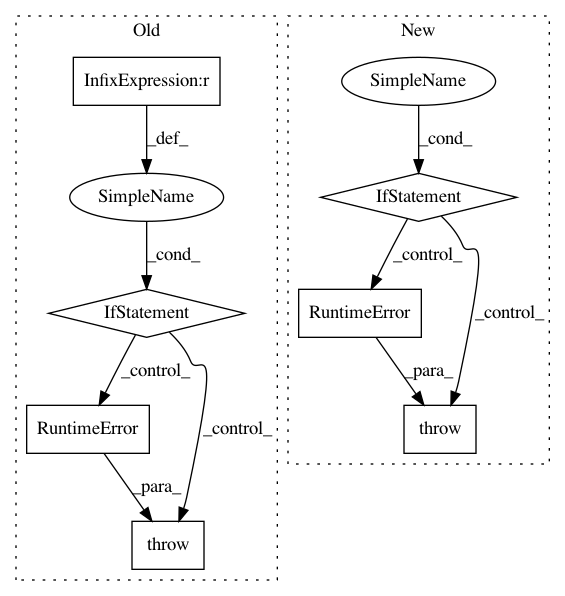

fdd55d36c05c747643fc98430a7f9b787b6cec16,gluoncv/data/kinetics400/classification.py,Kinetics400,_TSN_RGB,#Kinetics400#Any#Any#Any#Any#Any#Any#Any#,167
Before Change
frame_name = name_pattern % (length_id + offset)
frame_path = directory + "/" + frame_name
cv_img_origin = cv2.imread(frame_path, cv_read_flag)
if cv_img_origin is None:
raise(RuntimeError("Could not load file %s. Check data path." % (frame_path)))
if new_width > 0 and new_height > 0:
cv_img = cv2.resize(cv_img_origin, (new_width, new_height), interpolation)
else:
cv_img = cv_img_origin
After Change
for length_id in range(1, skip_length + 1, new_step):
frame_path = os.path.join(directory, name_pattern % (length_id + offset))
cv_img = self.cv2.imread(frame_path)
if cv_img is None:
if length_id == 1:
raise(RuntimeError("Could not load file %s starting at frame %d. Check data path." % (frame_path, offset)))
sampled_list.append(np.zeros((new_height, new_width, 3))) // pad black frames if this video clip does not have `skip_length` frames
continue
if new_width > 0 and new_height > 0:
h, w, _ = cv_img.shape
if h != new_height or w != new_width:
cv_img = self.cv2.resize(cv_img, (new_width, new_height))
In pattern: SUPERPATTERN
Frequency: 3
Non-data size: 7
Instances
Project Name: dmlc/gluon-cv
Commit Name: fdd55d36c05c747643fc98430a7f9b787b6cec16
Time: 2019-08-29
Author: yizhu59@gmail.com
File Name: gluoncv/data/kinetics400/classification.py
Class Name: Kinetics400
Method Name: _TSN_RGB
Project Name: streamlit/streamlit
Commit Name: 88e37703dfdd24274ad9744e07adf53a58a9300e
Time: 2019-06-03
Author: tconkling@gmail.com
File Name: lib/streamlit/ScriptRunner.py
Class Name: ScriptRunner
Method Name: _run
Project Name: ray-project/ray
Commit Name: 8204717eed71923f1e14fa6bd17ca4588c140c09
Time: 2020-07-16
Author: sven@anyscale.io
File Name: rllib/evaluation/rollout_worker.py
Class Name: RolloutWorker
Method Name: __init__